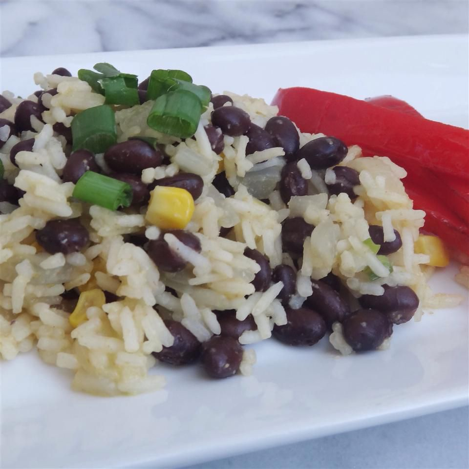

Beans and Rice

How to make the most delicious beans and rice
One of the easier and more delicious recipes to eat on a weeknight. Although the taste might sometimes be difficult to nail, as the ingredients are so few. However, overall a hearty, cheap and delicious meal to accompany any bean lover or student on a budget.
Ingredients
- 1 tablespoon vegetable oil
- 1 onion, chopped
- 1 (400g) can black beans, undrained
- 1 (400g) can chopped tomatoes
- 1 teaspoon dried oregagno
- 1/2 teaspoon dried oregano
- 1/2 teaspoon garlic powder
- 3,5 dl uncooked brown rice
Steps
- Heat oil over medium-high in a large saucepan. Add onion; cook and stir until tender. Add beans, tomatoes, oregano, and garlic powder. Bring to a boil.
- Stir in rice. Cover; reduce heat and simmer 15 minutes - or until rice is cooked through. Remove from heat; let stand 5 minutes before serving.